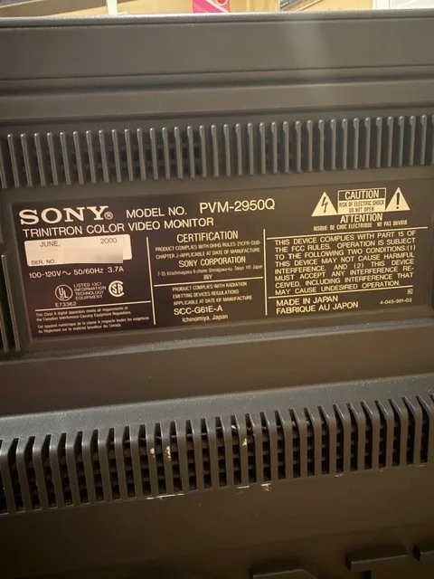
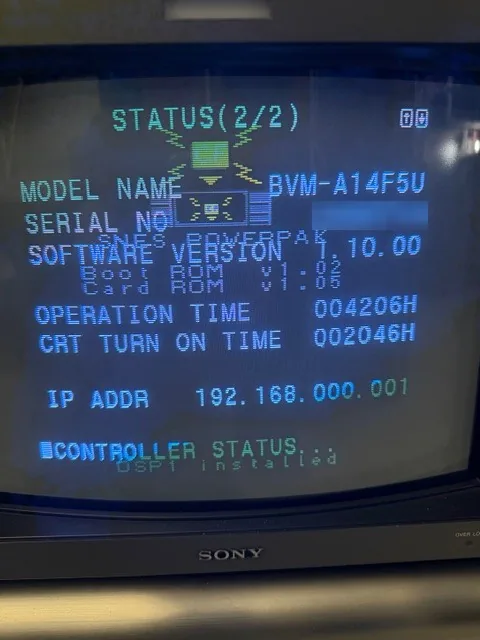

What the Plate Tells You
Sony never published how many broadcast monitors it built, or when. What it did do was fasten a plate to the back of every one. Between that plate, the badge on the front and, on a BVM, a counter kept inside the monitor, a Sony will tell you most of its own history.
Three numbers, three questions
A Sony professional monitor carries three numbers worth reading, and each one answers a different question.
They get mixed up constantly. A model’s production era is not a build date, and a build date says nothing about wear.
The model is a window, not a date
The badge on the front names the chassis: the line, the size, the series, and a suffix for the market it was sold in. Each letter and digit means something, and together they place a monitor in a span of years. A BVM-20E1U belongs to 1996–c.2001. A BVM-A14F5U belongs to 2006–c.2009.
How firm that span is depends on where it came from. Some eras rest on a Sony press release, dealer bulletin or brochure. Some rest on the copyright year of a manual. Some are a collector estimate, because nothing from Sony has turned up. The models list marks which is which for all 96 chassis.
The plate is the one date Sony printed
On the rear panel, next to the model number, are the serial number and the build date: a month and a year, spelled out. It is the only date on the monitor that belongs to that unit alone.


It can surprise you. The BVM-20E1U here had been written down as a June 2007 build, years after the model left the catalog. The plate reads October 1998.
A model number gives you a span of years. The plate gives you a month.
On a PVM the rear plate is the only place the serial appears. A BVM-D or BVM-A also shows it on a status screen, beside the model name.
Only a BVM keeps count
A BVM logs its own running time. On the D and A series it is on the status screen, as OPERATION TIME. On the older E and F series, which have no controls of their own, the same status page comes up through the control unit. A PVM keeps no count at all. There is no number to read, and a tube has to be judged by eye.
The status screen above shows two counters, not one. OPERATION TIME is how long the monitor has been powered. CRT TURN ON TIME is how long the tube itself has been lit, and it is the smaller of the two.
A big number is less alarming than it looks. The 20E1U here shows 44,708 hours: a little over five years of running time, spread across twenty-eight. The former Sony technician who serviced it puts a tube in ordinary use at 60,000 hours and often well beyond.
What the serial does not tell you
A serial number is a position in a run, not a date, and Sony never published the ranges. That gap is the reason the registry exists. Enough owners reporting a serial and a plate date together will show where each run started and where it stopped.
If you have read your plate, the census wants it.
Quick answers
How do I find out what year my Sony PVM or BVM was made?
Read the build date on the rear panel plate, printed as a month and a year. The model number only gives the span of years the design was sold.
Where is the serial number on a Sony PVM or BVM?
On the rear panel plate, next to the model number. A BVM-D or BVM-A also shows it on the status screen; on a PVM the plate is the only place.
Does a Sony PVM have an hours counter?
No. Only BVMs keep one. A PVM’s tube is judged by its picture.
What is the difference between operation time and CRT turn on time?
Operation time counts how long the monitor has been powered. CRT turn on time counts how long the tube has been lit.